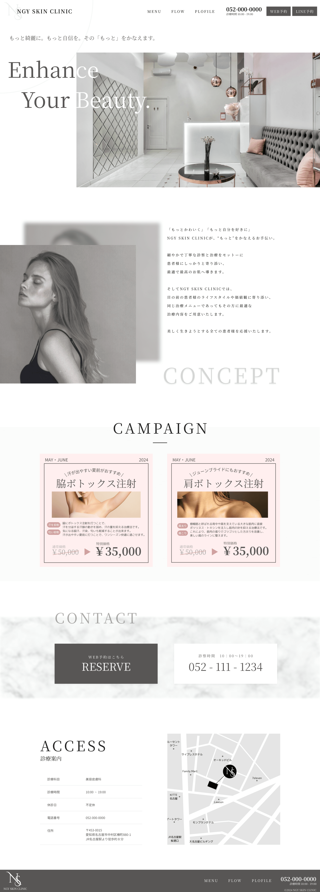
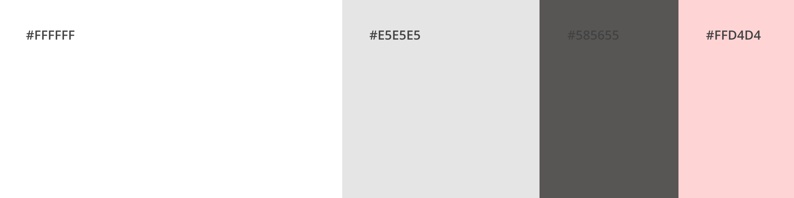

Type - Webdesign
CreationDate - 2024. 05
NGY SKIN CLINIC
通いやすい価格設定と立地にあり、気負うことなく来店できる雰囲気の美容クリニックをテーマに、架空のコーポレートサイトのデザインを制作しました。

- ターゲット
-
仕事終わりに気軽に寄れる美容クリニックを探しており、まずはお試し感覚で通いたいと考えている20〜40代の女性。
- 目的
-
クリニックの雰囲気や施術などを紹介し、実際に来院してもらうため。
- レイアウト
-
メインビジュアルにクリニックの画像を配置し、一番の目的である、クリニックの雰囲気を伝えることを意識しました。
- デザイン
-

清潔さや華やかさが伝わるような雰囲気を表現したかったので配色にこだわり、白、グレー、ピンクなど淡い色のトーンをでまとめることで、清潔さや華やかさを表現しています。
文字色も真っ黒ではなく優しい黒にすることで全体の調和がとれるように工夫しました。
また、レイアウトに余白をもたせることで、すっきりとした印象と清潔感が感じられるようにしています。
- 制作時間
- 35時間
- 使用ツール
- figma